library(tidyverse)
library(glmmTMB)
library(broom)
library(emmeans)
library(knitr)
library(ape)
library(RColorBrewer)
#devtools::install_github('gastonstat/arcdiagram')
library(igraph)
library(arcdiagram)
knitr::opts_chunk$set(comment="", cache=T, warning = F, message = F,
fig.path = "figures-comp/", dev = "svglite", dev.args=list(fix_text_size=FALSE))
options(digits=4, knitr.kable.NA = "")
ggplot2::theme_set(theme_minimal())Inventory
#in order of phylogenetic distance, pair order is by style length
sp_pairs <- c("menz"="menziesii", "sal"="salicaria",
"lydg"="lydgatei", "sarm" ="sarmentosa",
"stell"="stellarioides","sperg"="spergulina",
"memb"="membranacea","kaua"="kauaiensis",
"kaal"="kaalae", "hook"="hookeri")
sp_pal <- set_names(brewer.pal(length(sp_pairs), "Paired"), sp_pairs)
sp_pal_dark <- set_names(sp_pal[rep(seq(2,10,by=2), each=2)], sp_pairs)
typenames <- set_names(c("Intraspecific","Competitive","Interspecific"),c("intra","mixed","inter"))
type_pal <- set_names(brewer.pal(6,"Pastel1")[c(2,3,5)], names(typenames))
type_pal_dark <- set_names(brewer.pal(6,"Set1")[c(2,3,5)], names(typenames))
propnames <- set_names(c("Capsule formation","Seed number","Germination","Survival","Hybrid"), c("capsule.formed","sds","prop.germ", "prop.alive", "prop.hybrid"))
vigornames <- c(hybrid.vigor.germsurv="Hybrid/intraspecific fitness:\ngermination and survival",
hybrid.vigor.all="Hybrid/intraspecific fitness:\nseeds, germination, survivial")
momid.fixes <- read_tsv("data/Pollen competition - momid_fixes.tsv")
momid.fixes.seeds <- momid.fixes %>% drop_na(momid_fixed) %>% select(momid, momid_fixed) %>% deframe()
momid.fixes.germ <- momid.fixes %>% drop_na(germid, momid_fixed) %>% select(momid, momid_fixed) %>% deframe()
momid.fixes.surv <- momid.fixes %>% drop_na(survid, momid_fixed) %>% select(momid, momid_fixed) %>% deframe()
seeds <- read_tsv("data/Pollen competition - seeds.tsv") %>%
mutate(dadspm = if_else(type=="mixed" & dadsp1==momsp, dadsp1, dadsp2), #rearrange dad1/dad2 to have dadsp match momsp
dadidm = if_else(type=="mixed" & dadsp1==momsp, dadid1, dadid2),
dadsp = if_else(type=="mixed" & dadsp1==momsp, dadsp2, dadsp1),
dadid = if_else(type=="mixed" & dadsp1==momsp, dadid2, dadid1), .after=momid) %>%
select(-matches("dad(sp|id)[12]")) %>%
mutate(across(matches("sp"), ~ recode(.x, !!!sp_pairs)),
across(matches("(dad|mom)id"), ~str_remove_all(.x, "[ -]")),
across(matches("(dad|mom)id"), ~recode(.x, !!!momid.fixes.seeds)),
sxc = paste(momsp, type, sep="."),
type=factor(type, levels= names(typenames)),
across(matches("sp"), ~ factor(.x, levels = sp_pairs)),
capsule.formed = sds>0,
sds.nz = sds+1)
seeds.bycross <- seeds %>% group_by(type, momsp, sxc, momid, dadspm, dadidm, dadsp, dadid) %>%
summarize(capsule.formed=mean(capsule.formed), .groups="drop")
germ.pot <- read_tsv("data/Pollen competition - germination.tsv") %>%
mutate(dadspm = if_else(type=="mixed" & dadsp1==momsp, dadsp1, dadsp2), #rearrange dad1/dad2 to have dadsp match momsp
dadidm = if_else(type=="mixed" & dadsp1==momsp, dadid1, dadid2),
dadsp = if_else(type=="mixed" & dadsp1==momsp, dadsp2, dadsp1),
dadid = if_else(type=="mixed" & dadsp1==momsp, dadid2, dadid1), .after=momid) %>%
select(-starts_with("germinated_n"), -transplanted_n, -matches("dad(sp|id)[12]")) %>%
drop_na(germinated) %>% #exclude one contaminated cross and "intra inv" inviability tests
mutate(across(matches("sp"), ~ recode(.x, !!!sp_pairs)),
across(matches("(dad|mom)id"), ~str_remove_all(.x, "[ -]")),
across(matches("(dad|mom)id"), ~recode(.x, !!!momid.fixes.germ)), #TODO are the momid fixes applicable to dads too?
sxc = paste(momsp, type, sep="."),
type=factor(type, levels= names(typenames)),
across(matches("sp"), ~ factor(.x, levels = sp_pairs)),
germinated = ifelse(germinated > planted, planted, germinated))
germ <- germ.pot %>% group_by(date_planted, type, momsp, sxc, momid, dadspm, dadidm, dadsp, dadid) %>% #date_planted splits 30 plant x plant crosses
summarize(n.pdishes = n(), planted = sum(planted), germinated = sum(germinated), .groups="drop") %>% # add together all the pots of one cross
mutate(prop.germ = germinated/planted, # proportion of planted seeds that germinated
prop.germ.nz = (germinated+1)/(planted+1))
surv <- read_tsv("data/Pollen competition - survival.tsv") %>%
mutate(dadspm = if_else(type=="mixed" & dadsp1==momsp, dadsp1, dadsp2), #rearrange dad1/dad2 to have dadsp match momsp
dadidm = if_else(type=="mixed" & dadsp1==momsp, dadid1, dadid2),
dadsp = if_else(type=="mixed" & dadsp1==momsp, dadsp2, dadsp1),
dadid = if_else(type=="mixed" & dadsp1==momsp, dadid2, dadid1), .after=momid) %>%
select(-matches("dad(sp|id)[12]")) %>% drop_na(dead) %>% #one row excluded
mutate(across(matches("(mom|dad)id"), ~str_remove_all(.x, "[ -]")),
across(matches("(dad|mom)id"), ~recode(.x, !!!momid.fixes.surv)),
sxc = paste(momsp, type, sep="."),
type=factor(type, levels= names(typenames)),
across(matches("sp"), ~ factor(.x, levels = sp_pairs)),
across(all_of(c("sameasmom", "hybrid")), ~replace_na(.x,0)),
alive = sameasmom + hybrid,
total = alive + dead,
prop.hybrid = hybrid / alive,
prop.alive = alive / total,
prop.alive.nz = (alive+1)/(total+1))
germ %>% summarize(across(c(n.pdishes, planted, germinated), sum))# A tibble: 1 × 3
n.pdishes planted germinated
<int> <dbl> <dbl>
1 1658 27812 18732inventory <- surv %>% count(momsp, type, dadsp, name="crosses_surv") %>%
full_join(seeds %>% count(momsp, type, dadsp, name="crosses_seeds")) %>%
full_join(germ %>% count(momsp, type, dadsp, name="crosses_germ")) %>%
full_join(germ.pot %>% count(momsp, type, dadsp, name = "pots_germ")) %>%
mutate(pots_per_cross = pots_germ/crosses_germ)
kable(inventory, caption="Number of crosses between individual plants used for seeds, germination and survival,
and how many pots the seeds filled")| momsp | type | dadsp | crosses_surv | crosses_seeds | crosses_germ | pots_germ | pots_per_cross |
|---|---|---|---|---|---|---|---|
| menziesii | intra | menziesii | 7 | 64 | 8 | 74 | 9.250 |
| menziesii | mixed | salicaria | 11 | 170 | 16 | 80 | 5.000 |
| menziesii | inter | salicaria | 19 | 301 | 18 | 87 | 4.833 |
| salicaria | intra | salicaria | 11 | 82 | 11 | 97 | 8.818 |
| salicaria | mixed | menziesii | 14 | 99 | 12 | 76 | 6.333 |
| salicaria | inter | menziesii | 13 | 125 | 12 | 53 | 4.417 |
| lydgatei | intra | lydgatei | 5 | 111 | 5 | 42 | 8.400 |
| lydgatei | mixed | sarmentosa | 5 | 96 | 11 | 56 | 5.091 |
| lydgatei | inter | sarmentosa | 19 | 334 | 20 | 90 | 4.500 |
| sarmentosa | intra | sarmentosa | 2 | 103 | 2 | 20 | 10.000 |
| sarmentosa | mixed | lydgatei | 5 | 12 | 63 | 5.250 | |
| sarmentosa | inter | lydgatei | 7 | 74 | 9 | 41 | 4.556 |
| stellarioides | intra | stellarioides | 5 | 192 | 6 | 26 | 4.333 |
| stellarioides | mixed | spergulina | 6 | 137 | 6 | 27 | 4.500 |
| stellarioides | inter | spergulina | 10 | 163 | 7 | 13 | 1.857 |
| spergulina | intra | spergulina | 5 | 159 | 9 | 67 | 7.444 |
| spergulina | mixed | stellarioides | 4 | 8 | 50 | 6.250 | |
| spergulina | inter | stellarioides | 4 | 89 | 3 | 14 | 4.667 |
| membranacea | intra | membranacea | 4 | 57 | 5 | 27 | 5.400 |
| membranacea | mixed | kauaiensis | 5 | 206 | 6 | 60 | 10.000 |
| membranacea | inter | kauaiensis | 1 | 153 | 4 | 18 | 4.500 |
| kauaiensis | intra | kauaiensis | 2 | 1500 | 9 | 19 | 2.111 |
| kauaiensis | mixed | membranacea | 7 | 240 | 8 | 63 | 7.875 |
| kauaiensis | inter | membranacea | 1 | 242 | 1 | 3 | 3.000 |
| kaalae | intra | kaalae | 7 | 34 | 20 | 35 | 1.750 |
| kaalae | mixed | hookeri | 10 | 93 | 6 | 34 | 5.667 |
| kaalae | inter | hookeri | 11 | 175 | 73 | 118 | 1.616 |
| hookeri | intra | hookeri | 12 | 35 | 21 | 128 | 6.095 |
| hookeri | mixed | kaalae | 11 | 189 | 8 | 70 | 8.750 |
| hookeri | inter | kaalae | 34 | 156 | 61 | 107 | 1.754 |
inventory %>% group_by(type) %>% summarize(across(starts_with("crosses"), sum, na.rm=T)) %>%
kable(caption="Number of crosses between individual plants used for seeds, germination and survival,
and how many pots the seeds filled")| type | crosses_surv | crosses_seeds | crosses_germ |
|---|---|---|---|
| intra | 60 | 2337 | 96 |
| mixed | 78 | 1230 | 93 |
| inter | 119 | 1812 | 208 |
inventory.momid <- surv %>% count(momsp, type, dadsp, momid) %>% count(momsp, type, dadsp, name="crosses_surv") %>%
full_join(germ %>% count(momsp, type, dadsp, momid) %>% count(momsp, type, dadsp, name="crosses_germ"))
kable(inventory.momid, caption="Number of maternal plants used for seeds, germination and survival")| momsp | type | dadsp | crosses_surv | crosses_germ |
|---|---|---|---|---|
| menziesii | intra | menziesii | 4 | 5 |
| menziesii | mixed | salicaria | 7 | 7 |
| menziesii | inter | salicaria | 11 | 11 |
| salicaria | intra | salicaria | 6 | 6 |
| salicaria | mixed | menziesii | 12 | 11 |
| salicaria | inter | menziesii | 10 | 9 |
| lydgatei | intra | lydgatei | 5 | 5 |
| lydgatei | mixed | sarmentosa | 5 | 5 |
| lydgatei | inter | sarmentosa | 9 | 9 |
| sarmentosa | intra | sarmentosa | 2 | 2 |
| sarmentosa | mixed | lydgatei | 4 | 4 |
| sarmentosa | inter | lydgatei | 4 | 4 |
| stellarioides | intra | stellarioides | 5 | 6 |
| stellarioides | mixed | spergulina | 5 | 5 |
| stellarioides | inter | spergulina | 5 | 4 |
| spergulina | intra | spergulina | 5 | 5 |
| spergulina | mixed | stellarioides | 4 | 4 |
| spergulina | inter | stellarioides | 4 | 3 |
| membranacea | intra | membranacea | 4 | 4 |
| membranacea | mixed | kauaiensis | 5 | 6 |
| membranacea | inter | kauaiensis | 1 | 3 |
| kauaiensis | intra | kauaiensis | 2 | 8 |
| kauaiensis | mixed | membranacea | 7 | 7 |
| kauaiensis | inter | membranacea | 1 | 1 |
| kaalae | intra | kaalae | 5 | 12 |
| kaalae | mixed | hookeri | 8 | 5 |
| kaalae | inter | hookeri | 6 | 18 |
| hookeri | intra | hookeri | 6 | 8 |
| hookeri | mixed | kaalae | 9 | 7 |
| hookeri | inter | kaalae | 9 | 9 |
inventory.momid %>% group_by(type) %>% summarize(across(starts_with("crosses"), sum, na.rm=T)) %>%
kable(caption="Number of maternal plants used for seeds, germination and survival")| type | crosses_surv | crosses_germ |
|---|---|---|
| intra | 44 | 61 |
| mixed | 66 | 61 |
| inter | 60 | 71 |
# to run this, comment out across(matches("(mom|dad)id"), ~str_remove_all(.x, "[ -]")) lines above
# left_join(count(germ, momsp, germid=momid, name="germ") %>% mutate(momid=str_remove_all(germid, "[ -]")),
# germ %>% group_by(momsp, germid=momid) %>% summarize(tot.germ=sum(germinated))) %>%
# full_join(count(surv, momsp, survid=momid, name="surv")%>% mutate(momid=str_remove_all(survid, "[ -]"))) %>%
# arrange(momsp, momid) %>% select(momsp, momid, germid, survid, tot.germ, germ, surv) %>%
# add_count(momid)
# # write_tsv("data/survgerm_momids.tsv", na="")
mating <- read_tsv("data/Pollen competition - mating.tsv") %>%
left_join(tibble(momsp=sp_pairs, pair = factor(rep(1:5, each=2)))) %>%
mutate(momsp = factor(momsp, level=sp_pairs))
styles <- read_tsv("data/Pollen competition - style_length.tsv") %>%
mutate(momsp = factor(sp_pairs[momsp], levels=sp_pairs))
seedsize <- read_csv("data/seedlengths.csv") %>% #from Schiedea monograph, SeedsNectaries project
mutate(seedlength_mm = (seedlength_low_mm + seedlength_high_mm)/2) %>% #midpoint of range
rename(momsp=species) %>% left_join(mating) %>% drop_na(pair) %>% group_by(pair) %>%
mutate(momsp=factor(momsp, levels=sp_pairs),
seed_diff_mm = seedlength_mm-min(seedlength_mm)) %>% arrange(momsp)Scoring dates
The date scored is not always available or accurate, do not use for analysis.
germ.pot %>% ggplot(aes(x=date_planted, y=date_scored, color=momsp)) +
geom_abline(slope=1, intercept=0) + geom_abline(slope=1, intercept=90) + geom_point() + geom_rug() +
scale_color_brewer(palette="Paired") + labs(title="Germination scoring") #TODO check mis-entered dates
germ.pot %>% filter(abs(date_scored-date_planted)<=90) %>% ggplot(aes(x=date_scored - date_planted, fill=type)) +
facet_wrap(vars(momsp)) +
geom_histogram(binwidth=1) + scale_x_continuous(limits=c(0,NA)) +
labs(title="Germination scoring", subtitle = "plot restricted to 90 days")
surv %>% ggplot(aes(x=date_planted, y=date_scored, color=momsp)) + geom_point() + geom_rug() +
scale_color_brewer(palette="Paired") + labs(title="Survival scoring")
Histograms
ggplot(seeds, aes(x=sds, fill=type)) + geom_histogram(binwidth=1) + facet_wrap(vars(momsp))
ggplot(germ, aes(x=planted, fill=type)) + geom_histogram(binwidth=10) + facet_wrap(vars(momsp))
ggplot(germ, aes(x=germinated, fill=type)) + geom_histogram(binwidth=10) + facet_wrap(vars(momsp))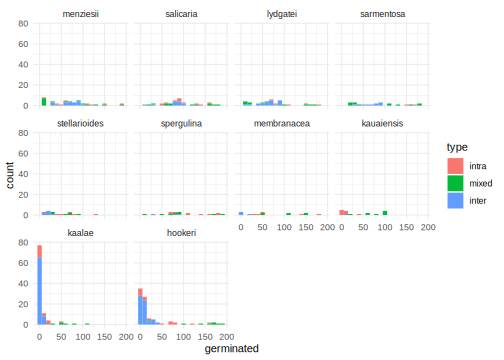
ggplot(filter(surv, type !="inter"), aes(x=sameasmom, fill=type)) + geom_histogram(binwidth=10) + facet_wrap(vars(momsp))
ggplot(filter(surv, type !="intra"), aes(x=hybrid, fill=type)) + geom_histogram(binwidth=1) + facet_wrap(vars(momsp))#lots of 20s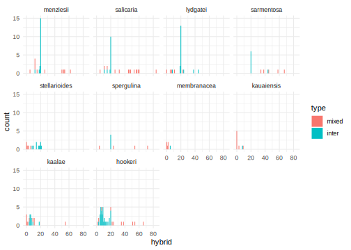
ggplot(surv, aes(x=dead, fill=type)) + geom_histogram(binwidth=10) + facet_wrap(vars(momsp), scales="free_y")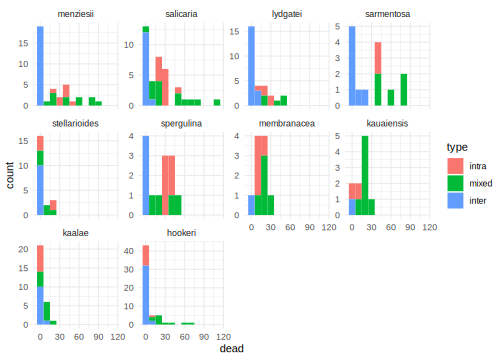
pct_y <- scale_y_continuous(breaks=(0:4)/4, labels=~scales::percent(.,accuracy=1), expand=c(0,0.02))
pct_x <- scale_x_continuous(breaks=(0:4)/4, labels=~scales::percent(.,accuracy=1), expand=c(0,0))
germ.surv <- full_join(germ, surv) #TODO fix matching
germ.surv %>% mutate(germalive = paste(is.na(germinated), is.na(alive)) %>%
recode(`FALSE FALSE`="both", `FALSE TRUE`="survival", `TRUE FALSE`="germination")) %>%
count(type, germalive) %>% pivot_wider(names_from="germalive", values_from="n") %>%
kable(kable="Matching crosses between germination and survival datasets")| type | both | germination | survival |
|---|---|---|---|
| intra | 52 | 8 | 44 |
| mixed | 33 | 45 | 60 |
| inter | 93 | 26 | 115 |
ggplot(germ.surv, aes(x=prop.germ, y=prop.alive, color=momsp, linetype=type)) +
geom_point() + geom_smooth(se=F, span=1.1) + pct_y + pct_x + theme(legend.position="top") +
scale_color_brewer(palette="Paired") + labs(x="Germination",y="Survival", color="Maternal species") 
ggplot(germ.surv %>% filter(type=="mixed"), aes(x=prop.alive, y=prop.hybrid, color=momsp)) +
geom_point() + geom_smooth(se=F, span=1.1)+ pct_y + pct_x + theme(legend.position="top") +
scale_color_brewer(palette="Paired") + labs(x="Survival",y="Hybrids", color="Maternal species") 
ggplot(germ.surv %>% filter(type=="mixed"), aes(x=prop.germ, y=prop.hybrid, color=momsp)) +
geom_point() + geom_smooth(se=F, span=1.1)+pct_y + pct_x + theme(legend.position="top") +
scale_color_brewer(palette="Paired") + labs(x="Germination",y="Hybrids", color="Maternal species") 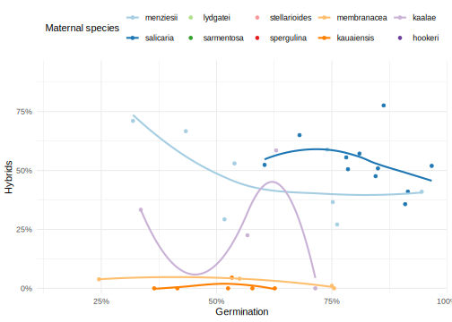
#does germ and surv not being independent make a difference when you take the mean of each and then multiply, versus
# multiplying within each cross?
# germ.surv %>% mutate(prop.germsurv = prop.germ * prop.alive) %>% drop_na(prop.germsurv) %>% #multiply within each cross
# group_by(momsp) %>% summarize(across(starts_with("prop"), mean)) %>%
# mutate(prop.germXsurv = prop.germ * prop.alive) %>% #multiply after taking the mean
# ggplot(aes(x=prop.germsurv, y= prop.germXsurv, color=momsp)) + scale_color_brewer(palette="Paired")+
# geom_point() + geom_abline(intercept=0, slope=1)
#
# #try it with perfectly correlated data
# fakecrosses <- tibble(cross=0:10, germ = cross/10, surv=germ, germsurv=germ * surv)
# fakecrosses %>% summarize(across(everything(), mean)) %>% mutate(germXsurv = germ * surv)Distribution of cumulative fitness
#dataname = name of the dataset, yvar = the fitness trait, N = number of trials for each species and crosstype
sample_trait <- function(dataname, yvar, N) {
get(dataname) %>% select(sxc, y=!!yvar) %>%
drop_na(y) %>% #drop missing trait values (various reasons for these)
group_by(sxc) %>% nest() %>% #subset data by the species and crosstype (between/within/hybrid)
mutate(sampled = map(data, slice_sample, n=N, replace=T)) %>% #sample each subset N times with replacement
select(-data) %>% unnest(sampled) %>% arrange(sxc) %>% mutate(trial=row_number()) #give each trial an index
}
traits <- enframe(propnames[2:4], name="yvar", value="ylab") %>%
mutate(data = c("seeds","germ","surv")) #seeds includes zeros (no capsule formed)
set.seed(1)
ntrials <- 1000
F1.cumul.fitness <- traits %>% select(data, yvar) %>% # independent multiplicative traits
mutate(samp = pmap(., sample_trait, N = ntrials)) %>% # sample each trait N times per species and crosstype
select(-data) %>% unnest(samp) %>% # expand sampled dataset to full size
pivot_wider(id_cols=c(sxc, trial), names_from=yvar, values_from=y) %>% # line up the trials for each variable
drop_na(sds, prop.germ, prop.alive) %>% #drop missing data for sarm+sper mixed pollinations
mutate(fitness_sds = sds,
fitness_prop.germ = sds * prop.germ,
fitness_prop.alive = sds * prop.germ * prop.alive)
F1.cumul.fitness %>% select(sxc, starts_with("fitness")) %>%
pivot_longer(starts_with("fitness"), names_to="stage", names_prefix = "fitness_") %>%
separate(sxc, into=c("momsp","type")) %>%
mutate(type = factor(type, levels=names(typenames)),
stage = factor(stage, levels=traits$yvar), momsp=factor(momsp, levels=sp_pairs)) %>%
ggplot(aes(x=value, fill=stage)) +
facet_grid(type~momsp, scales="free_x", labeller=as_labeller(c(set_names(sp_pairs), typenames)))+
geom_histogram(binwidth=1, boundary=-0.5, position=position_identity(), linewidth=1, alpha=0.5) +
scale_y_continuous(labels = ~scales::percent(./ntrials)) +
scale_fill_hue("Cumulative fitness after this stage: ",labels=traits$ylab) +
labs(y=paste0("Frequency of outcome (",ntrials," trials)"),
x="Surviving hybrids resulting from one pollination") +
theme_minimal() + theme(legend.position = "top")F1.cumul.fitness %>% group_by(sxc) %>% summarize(prop.zero=mean(fitness_sds>0)) %>%
ggplot(aes(x=prop.zero, y=sxc)) +
geom_point(size=2)+
scale_x_continuous(limits=c(0,1), labels=scales::percent) + theme_minimal() +
labs(x=paste0("Nonzero F1 flowers resulting from one P x P pollination (",ntrials," trials)"), y="Crosstype",
title = "Frequency cumulativefitness greater than zero") trials_to_average <- 50
calc_RI <- function(h, b) 1 - 2 * h/(h + b) #method of Sobel and Chen 2014 for hybrids vs. between-population intraspecific fitness, varies between -1 (hybrd vigor) and 1 (complete isolation)
F1.cumul.isolation <- F1.cumul.fitness %>%
group_by(sxc, meanblock = ceiling(trial / trials_to_average)) %>% #group into blocks of trials_to_average trials
summarize(across(starts_with("fitness"), mean)) %>% #take the mean fitness for each block and crosstype
pivot_longer(starts_with("fitness"), names_prefix = "fitness_", names_to="stage", values_to="fitness") %>%
separate(sxc, into=c("momsp","crosstype")) %>%
pivot_wider(names_from=crosstype, values_from=fitness) %>%
mutate(stage = factor(stage, levels=unique(traits$yvar)),
RI = calc_RI(h=intra, b=inter))
ggplot(F1.cumul.isolation, aes(y=fct_rev(stage), color=factor(momsp, levels=sp_pairs), x=RI)) +
geom_vline(xintercept=0, linetype=2) + geom_vline(xintercept=-1)+ geom_vline(xintercept=1)+
geom_boxplot(position=position_dodge(width=0.5), outlier.size = 0.2) +
scale_y_discrete(labels=deframe(select(traits, yvar, ylab))) +
scale_color_brewer(palette = "Paired") +
scale_x_continuous(limits=c(-1.1,1.1), breaks=c(-1,-0.5,0,0.5,1),
labels=c("-1\nheterosis","-0.5","0\nno\nbarrier","0.5","1\ncomplete\nisolation")) +
theme_minimal() + theme(legend.position = "top", legend.text = element_text(face="italic")) +
labs(x="Cumulative reproductive isolation", y="Fitness component", color="Maternal parent")Distribution of estimated hybrid proportions
#make a version of the resampled data that avoids zero proportions
set.seed(1)
ntrials <- 1000
F1.cumul.fitness.nz <- traits %>% select(data, yvar) %>% # independent multiplicative traits
mutate(yvar = paste0(yvar, ".nz")) %>% #get the data without zeros (add 1 to num and denom)
mutate(samp = pmap(., sample_trait, N = ntrials)) %>% # sample each trait N times per species and crosstype
select(-data) %>% unnest(samp) %>% # expand sampled dataset to full size
pivot_wider(id_cols=c(sxc, trial), names_from=yvar, values_from=y) %>% # line up the trials for each variable
drop_na(sds.nz, prop.germ.nz, prop.alive.nz) #drop missing data for sarm+sper mixed pollinations
#get Monte Carlo samples for uncertainty estimation
samples_per_batch <- 20
F1.backest <- surv %>% filter(type=="mixed") %>% select(momsp, hybrid, sameasmom) %>% mutate(batch = row_number()) %>%
pivot_longer(c(hybrid, sameasmom), names_to="type", values_to = "plt") %>%
mutate(type = recode(type, hybrid="inter", sameasmom="intra")) %>%
left_join(F1.cumul.fitness.nz %>% select(sxc, prop.alive.nz, prop.germ.nz, sds.nz) %>%
separate(sxc, into=c("momsp","type")) %>% group_by(momsp, type) %>% nest(), by=c("momsp", "type")) %>%
mutate(data = map(data, ~mutate(sample_n(.x, samples_per_batch), samp=row_number()))) %>% unnest(data) %>%
mutate(sdl = plt/prop.alive.nz, #back-estimate but avoid dividing by zero by adding one to num and den
sds = sdl/prop.germ.nz,
zyg = sds/sds.nz) %>% #add one to all seed counts to avoid zeros
pivot_wider(names_from="type", values_from=c(plt, prop.alive.nz, prop.germ.nz, sds.nz, sdl, sds, zyg)) %>%
mutate(hyb.plt = plt_inter / (plt_inter + plt_intra),
hyb.sdl = sdl_inter / (sdl_inter + sdl_intra),
hyb.sds = sds_inter / (sds_inter + sds_intra),
hyb.zyg = zyg_inter / (zyg_inter + zyg_intra))
F1.backest.long <- F1.backest %>%
select(momsp, batch, samp, starts_with("hyb")) %>%
mutate(momsp= factor(momsp, levels=sp_pairs)) %>%
pivot_longer(starts_with("hyb"), names_prefix="hyb.", names_to="stage", values_to="prop") %>%
arrange(momsp, batch, stage)
ggplot(F1.backest.long, aes(x=fct_rev(stage), color=momsp, y=prop)) +
facet_wrap(vars(momsp), ncol=2) +
geom_path(aes(group=paste(batch, samp)), alpha=0.2)+
geom_violin(draw_quantiles = c(0.25, 0.5, 0.75)) + geom_jitter(size=0.2, height=0, width=0.2) +
scale_color_brewer(palette = "Paired") + guides(color="none") +
scale_x_discrete(labels=c(zyg="Comp", sds="Seed", sdl="Seedling", plt="Plant"))+
labs(x="Life stage", y="Proportion of hybrids")Models
Expand this code to see the model specifications. The models have the following settings:
- response variable: proportion seeds that germinated, proportion seedlings that survived, proportion of live seedlings that are hybrids
- sxc: the combined maternal plant species and crosstype (within species, between species, mixed pollen)
- momid: random effects of the maternal plant genotype
- family: betabinomial (for binary variables)
comp.mod <- list(
capsule.formed=glmmTMB(capsule.formed ~ sxc + (1|momid), family="betabinomial", data=seeds %>% mutate(sxc=factor(sxc))),
sds = glmmTMB(sds ~ sxc + (1|momid), family="truncated_nbinom1", data=filter(seeds, sds>0) %>% mutate(sxc=factor(sxc))),
prop.germ = glmmTMB(prop.germ ~ sxc + (1|momid), family="betabinomial", data=germ %>% mutate(sxc=factor(sxc)), weights = planted),
prop.alive = glmmTMB(prop.alive ~ sxc + (1|momid), family="betabinomial", data=surv %>% mutate(sxc=factor(sxc)), weights = total),
prop.hybrid = glmmTMB(prop.hybrid ~ sxc + (1|momid), family="betabinomial", data=filter(surv, type=="mixed") %>% mutate(sxc=factor(sxc)), weights = alive))Maternal effects
comp.ranef <- map_dfr(comp.mod, ~as.data.frame(ranef(.x)), .id="trait") %>% as_tibble() %>%
rename(momid=grp, estimate = condval, sd = condsd) %>% select(-component, -grpvar, -term) %>%
mutate(momid= as.character(momid), trait=factor(trait, levels=names(propnames))) %>%
left_join(count(germ, momsp.germ=momsp, momid, name="germ")) %>%
left_join(count(surv, momsp.surv=momsp, momid, name="surv")) %>%
left_join(count(seeds, momsp.seeds=momsp, momid, name="seeds")) %>%
mutate(momsp = coalesce(coalesce(momsp.germ, momsp.surv),momsp.seeds), .keep="unused")
ggplot(comp.ranef, aes(x=estimate, y=paste(str_sub(momsp,1,4),momid), color=momsp)) +
facet_wrap(vars(trait), labeller = as_labeller(propnames), nrow=1) +
geom_pointrange(aes(xmin=estimate-sd, xmax=estimate+sd)) + theme(axis.text.y=element_text(size=7))+
scale_color_brewer(palette="Paired", guide="none") + labs(x="Maternal effect", y="Maternal plant") 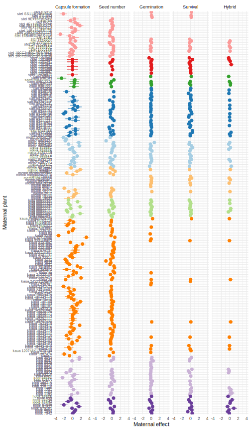
comp.ranef %>% select(-sd) %>% pivot_wider(names_from="trait", values_from="estimate") %>%
ggplot(aes(y=prop.alive, x=prop.germ, color=momsp)) + geom_point() + scale_color_brewer(palette="Paired") +
geom_smooth(aes(group=1), color="grey30") + theme(legend.position="top")+
labs(x="Maternal effect on germination", y="Maternal effect on survival", color="Maternal species")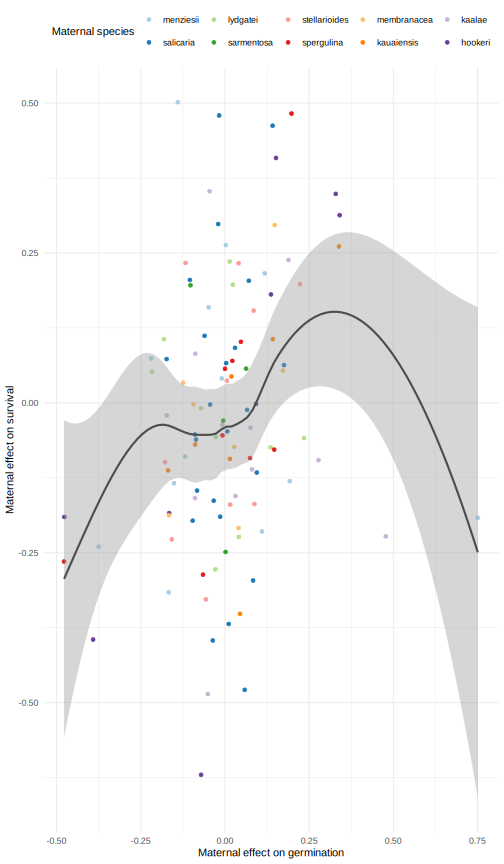
comp.ranef %>% select(-sd) %>% pivot_wider(names_from="trait", values_from="estimate") %>%
ggplot(aes(y=prop.hybrid, x=prop.alive, color=momsp)) + geom_point() + scale_color_brewer(palette="Paired") +
geom_smooth(aes(group=1), color="grey30") + theme(legend.position="top")+
labs(x="Maternal effect on survival", y="Maternal effect on hybrids", color="Maternal species")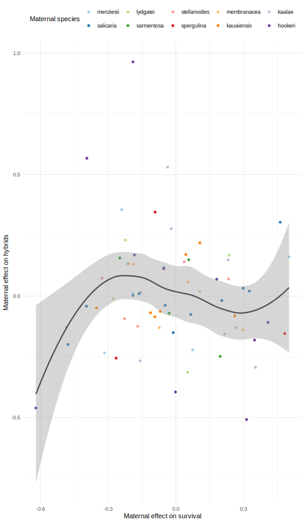
Inference
comp.tests <- map_dfr(comp.mod[-5], ~multcomp::glht(.x, linfct = multcomp::mcp(sxc = paste0(sp_pairs,".inter - ",sp_pairs,".intra = 0"))) %>%
multcomp:::summary.glht(test=multcomp::adjusted(type="fdr")) %>% tidy(), .id="trait") %>%
mutate(momsp = factor(str_extract(contrast, "([^\\.]+)"), levels=sp_pairs),
trait = factor(trait, levels=names(propnames))) %>%
select(trait, momsp, inter.minus.intra=estimate, std.error, adj.p.value)
comp.emm <- map_dfr(comp.mod, ~emmeans(., ~sxc) %>% summary(type="response") %>% #average over collect date
tidy %>% rename(estimate=any_of(c("response","prob"))), .id="trait") %>%
separate(sxc, into = c("momsp","type")) %>%
mutate(momsp=factor(momsp, levels=sp_pairs),
type=factor(type, levels= names(typenames)),
trait=factor(trait, levels=names(propnames)))
calc_RI <- function(h, b) 1 - 2 * h/(h + b) #method of Sobel and Chen 2014 for hybrids vs. between-population intraspecific fitness, varies between -1 (hybrd vigor) and 1 (complete isolation)
highlow <- function(fn, a, b) { #method of Sobel and Streisfeld 2015 Fig. S1
combos <- c(fn(a[1], b[1]), fn(a[1],b[2]), fn(a[2],b[1]), fn(a[2], b[2]))
set_names(c(min(combos), max(combos)), c("low","high"))
}
postzygotic.ratios <- comp.emm %>% filter(type %in% c("inter","intra")) %>%
select(trait, momsp, type, estimate, conf.low, conf.high) %>%
pivot_wider(names_from = type, values_from = c(estimate, conf.low, conf.high)) %>%
rename_with(~ str_remove(.,"estimate_|conf.")) %>% rowwise() %>%
mutate(across(c(intra, inter), ~ ./max(intra, inter)),
hybrid.vigor = inter/intra,
RI = calc_RI(h=inter, b=intra)) %>%
mutate(RI.range = list(highlow(fn=calc_RI, a=c(low_inter, high_inter), b=c(low_intra, high_intra))),
.keep="unused") %>% unnest_wider(RI.range)
ggplot(postzygotic.ratios, aes(y=fct_rev(momsp), x=trait, fill=log2(hybrid.vigor))) +
geom_tile() + geom_text(aes(label=format(hybrid.vigor,digits=1))) +
scale_fill_gradient2(guide="none") + scale_x_discrete(labels=propnames, position="top")+
theme(axis.title = element_blank(), axis.text.y=element_text(color=rev(sp_pal_dark), face="italic"))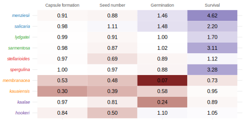
#doesn't work, compares all to the first level (hookeri), and glht doesn't support comparison to a constant
#hybrid.half <- multcomp::glht(comp.mod$prop.hybrid, multcomp::mcp(sxc = paste0(sp_pairs[-7],".mixed = 0")))
#compare to null of 50% hybrids, since pollen mixtures were 50-50
# function that takes p = proportion of hybrids and
# W = relative fitness of hybrids = absolute fitness of hybrids / absolute fitness of intraspecifics
# and returns the proportion of hybrids in the previous life stage.
# based on solving the following for pp (previous proportion):
# p = pp W / (pp W + 1 - pp)
# 1 - pp represents the previous proportion of intraspecifics
# see https://www.zoology.ubc.ca/~otto/PopGen500/Lecture1/Overheads.html
goback <- function(p, W) p/(p + W - p*W)
hybrid.test <- surv %>% filter(type=="mixed") %>%
group_by(momsp, type, dadsp) %>%
summarize(total=sum(total), alive=sum(alive), hybrid=sum(hybrid), crosses=n(), .groups="drop") %>%
mutate(total_per_c = total/crosses, alive_per_c = alive / crosses,
prop.hybrid = hybrid/alive,
p = map2_dbl(hybrid, alive, ~binom.test(x=.x, n=.y, p = 0.5)$p.value),
p.adj = p.adjust(p, "bonferroni"),
stars = cut(p.adj, breaks = c(-Inf, 0.01, 0.05, 0.10, Inf),
labels = c("***", "**", "*", "n.s."), right = FALSE)) %>%
left_join(postzygotic.ratios %>% pivot_wider(id_cols = momsp, names_from=trait, values_from = hybrid.vigor)) %>%
mutate(hybrid.vigor.all = capsule.formed * sds * prop.germ * prop.alive, #these are all inter/intra relative fitnesses (hybrid vigor)
prop.hybrid.sdl = goback(prop.hybrid, prop.alive), #seedling stage
prop.hybrid.sds = goback(prop.hybrid.sdl, prop.germ), #seed stage
prop.hybrid.zyg = goback(goback(prop.hybrid.sds, sds), capsule.formed)) #two steps!
hybnames <- c(prop.hybrid = "Plant", #TODO rename this hybnames to avoid conflict
prop.hybrid.sdl = "Seedling",
prop.hybrid.sds = "Seed",
prop.hybrid.zyg = "Competition")
hybrid.test %>% select(momsp, all_of(names(hybnames))) %>%
pivot_longer(-momsp, names_to="trait") %>%
ggplot(aes(y=fct_rev(momsp), x=trait, fill=log2(value))) +
geom_tile() + geom_text(aes(label=format(value,digits=1))) + scale_fill_gradient2(guide="none", midpoint=-1) +
scale_x_discrete(labels=hybnames, position="top")+
theme(axis.title = element_blank(), axis.text.y=element_text(color=rev(sp_pal_dark), face="italic"))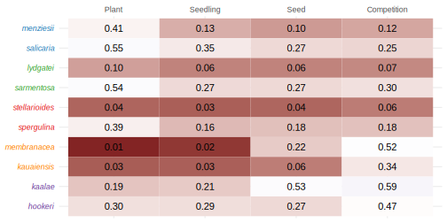
hybrid.test %>% select(momsp, all_of(names(hybnames))) %>%
pivot_longer(-momsp, names_to="trait") %>% mutate(trait = factor(trait, levels = rev(names(hybnames)))) %>%
ggplot(aes(color=momsp, x=trait, y=value, group=momsp)) +
geom_hline(yintercept=0.5, linetype=2)+
geom_path(linewidth=2) + geom_point(size=4) +
scale_color_brewer("Maternal species", palette="Paired") +
scale_x_discrete("Life stage", labels=hybnames, position="top")+
scale_y_continuous("Estimated proportion of hybrid progeny", breaks=0:10/10)+
theme(legend.text=element_text(face="italic"), panel.grid.major.x = element_blank()) 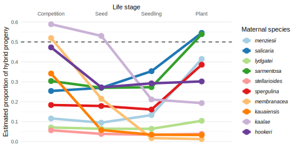
asym.test <- surv %>% filter(type=="mixed") %>%
left_join(mating) %>% arrange(pair) %>% group_by(pair) %>% nest() %>%
mutate(model = map(data, ~glmmTMB(prop.hybrid ~ momsp, family="betabinomial", data=., weights = alive)),
anova = map(model, ~tidy(car::Anova(.x)))) %>% #(1|momid) broke model for 3rd pair
select(-data, -model) %>% unnest(anova) %>% filter(term !="Residuals") %>%
left_join(summarize(mating, species=paste(momsp, collapse="-"), .by=pair))
kable(asym.test, caption="Differences in hybrid proportions by cross direction")| pair | term | statistic | df | p.value | species |
|---|---|---|---|---|---|
| 1 | momsp | 5.1712 | 1 | 0.0230 | menziesii-salicaria |
| 2 | momsp | 23.6881 | 1 | 0.0000 | lydgatei-sarmentosa |
| 3 | momsp | 12.9453 | 1 | 0.0003 | stellarioides-spergulina |
| 4 | momsp | 0.0648 | 1 | 0.7991 | membranacea-kauaiensis |
| 5 | momsp | 4.1437 | 1 | 0.0418 | hookeri-kaalae |
Plots
Boxplots of the germination and survival proportions in each plant x plant cross. Germination proportions are calculated across all pots of a given plant x plant cross. Points show estimated marginal mean and 95% CI.
sp_theme <- theme(legend.position = "top",
panel.grid.major.x=element_blank(), panel.grid.minor.y=element_blank(),
axis.text.x = element_text(angle=20, face="italic"), axis.text = element_text(color="black"))
bxplt <- geom_boxplot(position = position_dodge(width=0.9), color="grey50", outlier.size=0.5)
alternate <- geom_tile(data=tibble(momsp=sp_pairs[seq(1,10,by=2)]), aes(x=momsp, y=0.5, height=1, width=1), alpha=0.4, fill="grey", inherit.aes = F)
ggplot(filter(seeds.bycross, !momsp %in% c("sarmentosa","spergulina")), aes(x=momsp, fill=type, y=capsule.formed)) +
bxplt + alternate + bxplt +
geom_pointrange(data=filter(comp.emm, trait=="capsule.formed", !momsp %in% c("sarmentosa","spergulina")), aes(y=estimate, ymax=conf.high, ymin=conf.low, color=type),
position = position_dodge(width=0.9), size=0.5, show.legend=F) +
scale_fill_manual(values=type_pal, labels=typenames) + scale_color_manual(values=type_pal_dark, labels=typenames) +
scale_x_discrete(position="top", drop=FALSE) + pct_y +
labs(x="Maternal species", y="Capsule formation", fill="Pollination") + sp_theme 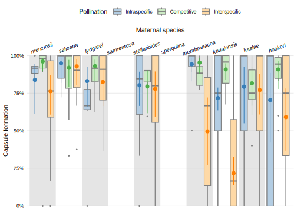
ggplot(seeds %>% filter(sds>0), aes(x=momsp, fill=type, y=sds)) + bxplt +
geom_tile(data=tibble(momsp=sp_pairs[seq(1,10,by=2)]), aes(x=momsp, y=35, height=70, width=1),
alpha=0.2, fill="grey", inherit.aes = F) + bxplt +
geom_pointrange(data=filter(comp.emm, trait=="sds"), aes(y=estimate, ymax=conf.high, ymin=conf.low, color=type),
position = position_dodge(width=0.9), size=0.5, show.legend=F) +
scale_fill_manual(values=type_pal, labels=typenames) + scale_color_manual(values=type_pal_dark, labels=typenames) +
scale_y_continuous(expand=c(0.02,0))+
labs(x="Maternal species", y="Seeds", fill="Pollination") + sp_theme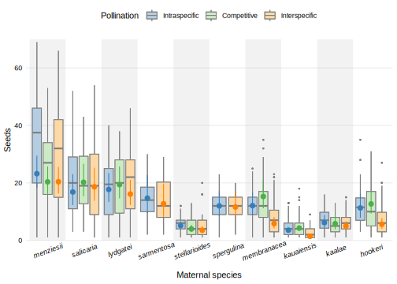
ggplot(germ, aes(x=momsp, fill=type, y=prop.germ)) + bxplt + alternate + bxplt +
geom_pointrange(data=filter(comp.emm, trait=="prop.germ"), aes(y=estimate, ymax=conf.high, ymin=conf.low, color=type),
position = position_dodge(width=0.9), size=0.5, show.legend=F) +
scale_fill_manual(values=type_pal, labels=typenames) + scale_color_manual(values=type_pal_dark, labels=typenames) +
scale_x_discrete(position="top") + pct_y +
labs(x="Maternal species", y="Germination", fill="Pollination") + sp_theme
ggplot(surv, aes(x=momsp, fill=type, y=prop.alive)) + bxplt + alternate + bxplt +
geom_pointrange(data=filter(comp.emm, trait=="prop.alive"), aes(y=estimate, ymax=conf.high, ymin=conf.low, color=type),
position = position_dodge(width=0.9), size=0.5, show.legend=F) +
scale_fill_manual(values=type_pal, labels=typenames) + scale_color_manual(values=type_pal_dark, labels=typenames) +
scale_x_discrete(position="top") + pct_y +
labs(x="Maternal species", y="Survival", fill="Pollination") + sp_theme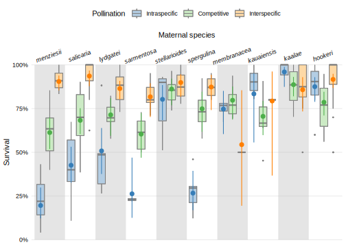
ggplot(filter(surv, type=="mixed"), aes(x=momsp, y=prop.hybrid, fill=momsp)) +
geom_hline(yintercept=0.5)+ geom_violin(scale="width", draw_quantiles = c(0.25,0.5,0.75))+
geom_pointrange(data=left_join(filter(comp.emm, trait=="prop.hybrid"), hybrid.test),
aes(y=estimate, ymax=conf.high, ymin=conf.low, shape=p.adj < 0.05), size=1) +
scale_shape_manual("Different from 50%", values=c(1, 19), labels=c("no","yes"))+
geom_text(data=hybrid.test, aes(y=1.1, label=crosses))+ annotate("text", x=11, y=1.1, label="crosses")+
geom_text(data=hybrid.test, aes(y=1.04, label=alive))+ annotate("text", x=11, y=1.04, label="progeny")+
coord_cartesian(clip="off")+
scale_fill_brewer(palette="Paired", guide="none") +
scale_y_continuous(breaks=(0:4)/4, labels=~scales::percent(.,accuracy=1), expand=c(0.02,0), limits=c(0,1.1))+
labs(x="Maternal species", y="Hybrids from competitive pollinations") + sp_theme +
theme(plot.margin = unit(5.5*c(1,6,1,1), "points"))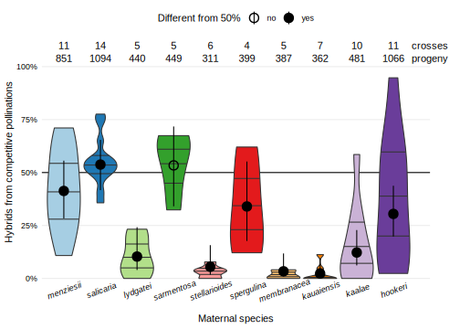
hybrid.test %>% left_join(filter(comp.emm, trait=="prop.hybrid")) %>%
select(momsp, dadsp, prop.hybrid, std.error, p.adj) %>% kable(caption="Test if hybrid proportions differ from 50%")| momsp | dadsp | prop.hybrid | std.error | p.adj |
|---|---|---|---|---|
| menziesii | salicaria | 0.4148 | 0.0713 | 0.0000 |
| salicaria | menziesii | 0.5457 | 0.0617 | 0.0274 |
| lydgatei | sarmentosa | 0.1045 | 0.0482 | 0.0000 |
| sarmentosa | lydgatei | 0.5390 | 0.1011 | 1.0000 |
| stellarioides | spergulina | 0.0386 | 0.0309 | 0.0000 |
| spergulina | stellarioides | 0.3860 | 0.1000 | 0.0001 |
| membranacea | kauaiensis | 0.0129 | 0.0223 | 0.0000 |
| kauaiensis | membranacea | 0.0331 | 0.0171 | 0.0000 |
| kaalae | hookeri | 0.1933 | 0.0413 | 0.0000 |
| hookeri | kaalae | 0.3021 | 0.0621 | 0.0000 |
Tested whether the proportion of hybrids significantly differed from 50%, accounting for multiple comparisons. Violin plots show proportions for each plant x plant cross. The number of plant x plant crosses indicated above the plot.
Predicted and actual germination
#hybrid.vigor.germsurv = (prop.germ_inter / prop.germ_intra) * (prop.surv_inter / prop.surv_intra)
#prop.hybrid.sds = prop.hybrid / hybrid.vigor.germsurv
# prop.germ_mixed.pred ?= prop.germ_mixed
# prop.germ_mixed.pred = prop.hybrid.sds * prop.germ_inter + (1-prop.hybrid.sds) * prop.germ_intra
# = prop.germ_intra + prop.hybrid.sds * (prop.germ_inter - prop.germ_intra)
hybrid.test %>% left_join(pivot_wider(comp.emm, id_cols = momsp, names_from=c(trait, type), values_from = estimate)) %>%
mutate(prop.germ_mixed.pred = prop.hybrid.sds * prop.germ_inter + (1-prop.hybrid.sds) * prop.germ_intra) %>%
ggplot(aes(x = momsp, color=momsp)) +
geom_segment(aes(y=prop.germ_intra, yend=prop.germ_inter, xend=momsp))+
geom_point(aes(y=prop.germ_inter, shape="inter"), size=4)+
geom_point(aes(y=prop.germ_intra, shape="intra"), size=4)+
geom_point(aes(y=prop.germ_mixed, shape="mixed"), size=4)+
geom_point(aes(y=prop.germ_mixed.pred, shape="pred"), size=4)+
geom_label(aes(y=prop.germ_mixed.pred, label=paste0(round(prop.hybrid.sds*100),"%"), fill=momsp), show.legend = F, nudge_x = 0.5, color="black") +
scale_shape_manual("Cross", values=c(inter=15, intra=16, mixed=17, pred=3),
labels=c(typenames, pred="Predicted from estimated hybrid seed ratio"))+
scale_color_brewer(palette="Paired", guide="none") + scale_fill_brewer(palette="Paired") +
scale_y_continuous("Germination", limits=c(0,1), expand=c(0,0), labels=~scales::percent(.,accuracy=1)) +
scale_x_discrete("Maternal species", guide = guide_axis(angle=90), expand = expansion(mult=0.1))+
theme(legend.position="top")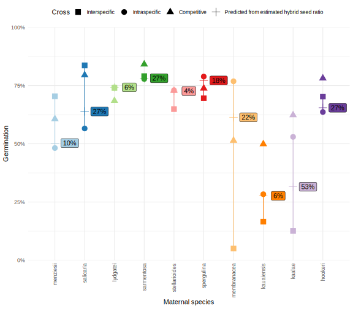
Style length
count(styles, momsp, plantid) %>% count(momsp) %>% kable(caption = "Number of plants for style length")| momsp | n |
|---|---|
| menziesii | 5 |
| salicaria | 5 |
| lydgatei | 7 |
| sarmentosa | 4 |
| stellarioides | 5 |
| spergulina | 5 |
| membranacea | 4 |
| kauaiensis | 8 |
| kaalae | 5 |
| hookeri | 9 |
styles.emm <- glmmTMB(style_length_mm ~ momsp + (1|plantid), data=styles) %>%
emmeans(~momsp) %>% summary(type="response") %>% tidy %>% rename(style_length_mm = estimate) %>%
left_join(mating) %>% group_by(pair) %>%
mutate(momsp=factor(momsp, levels=sp_pairs),
style_diff_mm = style_length_mm-min(style_length_mm),
style_diff_rel = style_diff_mm / min(style_length_mm))
ggplot(styles, aes(x=momsp, y=style_length_mm, fill=momsp)) +
geom_violin(scale="width")+
geom_tile(data=tibble(momsp=sp_pairs[c(1,2,5,6,9,10)]), aes(x=momsp, y=4, height=8, width=1), alpha=0.4, fill="grey", inherit.aes = F) +
geom_violin(scale="width", draw_quantiles = c(0.25,0.5,0.75))+
geom_pointrange(data=styles.emm, aes(ymax=conf.high, ymin=conf.low)) +
scale_fill_brewer(palette="Paired", guide="none") + scale_y_continuous(limits=c(0,NA))+
labs(x="Species", y="Style length (mm)") + sp_theme
styles.emm %>%left_join(styles %>% group_by(momsp, plantid) %>% summarize(style_length_mm = mean(style_length_mm)) %>%
group_by(momsp) %>% summarize(sd=sd(style_length_mm))) %>% select(momsp, style_length_mm, std.error, sd, style_diff_rel) %>%
kable(caption="comparison of style length relative to short-styled species")| pair | momsp | style_length_mm | std.error | sd | style_diff_rel |
|---|---|---|---|---|---|
| 1 | menziesii | 6.595 | 0.1838 | 0.7509 | 0.6634 |
| 1 | salicaria | 3.965 | 0.1838 | 0.5266 | 0.0000 |
| 2 | lydgatei | 3.840 | 0.1553 | 0.5169 | 0.8515 |
| 2 | sarmentosa | 2.074 | 0.2055 | 0.1635 | 0.0000 |
| 3 | stellarioides | 4.498 | 0.1838 | 0.4483 | 0.4662 |
| 3 | spergulina | 3.068 | 0.1838 | 0.4707 | 0.0000 |
| 4 | membranacea | 4.460 | 0.2055 | 0.1665 | 0.0399 |
| 4 | kauaiensis | 4.289 | 0.1562 | 0.2922 | 0.0000 |
| 5 | kaalae | 5.357 | 0.1838 | 0.3640 | 0.2302 |
| 5 | hookeri | 4.354 | 0.1372 | 0.4571 | 0.0000 |
Phylogenetic distance and style length
Load Schiedea tree inferred with RAxML from Willyard et al. nuclear dataset (no chloroplast data, 1 accession per species).
tree <- read.nexus("data/RAxML_1ps_nocp_bipartitionsBranchLabels.sch.short.nobs.nex")
plot(tree, tip.color = sp_pal[tree$tip.label])
# par(mfrow=c(1,2))
# par(mar=c(1.5,0,1.5,0))
tree_pairs <- tree %>% keep.tip(sp_pairs)
# plot(tree_pairs, tip.color = sp_pal[tree_pairs$tip.label])
# par(mar=c(0,0,0,0))
# sp_pairs %>% matrix(ncol=2, byrow=T) %>%
# arcplot(show.labels=F, horizontal=F, ordering=tree_pairs$tip.label,
# col.arcs=sp_pal[(1:5)*2], col.nodes = sp_pal)
# par(mfrow=c(1,1))
hybrid.phylodist <- comp.emm %>% left_join(select(hybrid.test, momsp, dadsp, -type)) %>%
mutate(pd = map2_dbl(as.character(momsp), as.character(dadsp), ~cophenetic(tree_pairs)[.x,.y])) %>%
select(-df)
phylodist <- hybrid.phylodist %>% group_by(momsp, dadsp) %>% summarize(pd=pd[1])
#TODO use a binomial GLM here, with the raw data?
hybrid.phylodist.test <- hybrid.phylodist %>% left_join(styles.emm, by="momsp") %>% group_by(trait, type) %>% nest() %>%
mutate(model = map(data, ~lm(estimate ~ pd + style_diff_mm, data=.x)),
anova = map(model, ~tidy(car::Anova(.x)))) %>%
select(-data, -model) %>% unnest(anova) %>% filter(term !="Residuals")
hybrid.phylodist.test %>% select(trait, type, term, p.value) %>% filter(type !="intra") %>%
mutate(trait = propnames[trait], type= typenames[type],
term=recode(term, pd="Phylogenetic distance", style_diff_mm="Style length difference")) %>%
pivot_wider(names_from=term, values_from=p.value) %>%
kable(caption = "p-values from models of each proportion", digits=3)| trait | type | Phylogenetic distance | Style length difference |
|---|---|---|---|
| Capsule formation | Interspecific | 0.024 | 0.555 |
| Capsule formation | Competitive | 0.527 | 0.686 |
| Seed number | Interspecific | 0.007 | 0.772 |
| Seed number | Competitive | 0.128 | 0.637 |
| Germination | Interspecific | 0.007 | 0.432 |
| Germination | Competitive | 0.044 | 0.139 |
| Survival | Interspecific | 0.307 | 0.777 |
| Survival | Competitive | 0.044 | 0.466 |
| Hybrid | Competitive | 0.023 | 0.141 |
ggplot(left_join(hybrid.phylodist, filter(hybrid.phylodist.test, term=="pd")), aes(x=pd, y=estimate)) +
facet_grid(trait~type, labeller=as_labeller(c(propnames, typenames)), scales="free_y")+ coord_cartesian(ylim=c(0,NA))+
geom_smooth(aes(linetype=paste(p.value < 0.05, type=="intra")), method="lm", se=F, color="grey") +
geom_pointrange(aes(ymax=conf.high, ymin=conf.low, color=momsp)) + scale_color_brewer(palette="Paired") + pct_y+
scale_linetype_manual(values=c(2,0,1,0), guide="none") + scale_alpha_manual(breaks=c(T,F), values=c(0.5, 1))+
labs(x="Phylogenetic distance (mutations/site)", color="Maternal species") + theme_bw() +
theme(axis.title.y=element_blank(), axis.text=element_text(color="black"), legend.position="top",
panel.grid.minor = element_blank(), panel.grid.major.x=element_blank(), panel.spacing = unit(1, "lines"))
postzygotic.ratios.phylo <- postzygotic.ratios %>% left_join(comp.tests) %>% left_join(phylodist) %>%
mutate(signif = adj.p.value < 0.05) %>%
filter(!(trait=="capsule.formed" & momsp %in% c("spergulina", "sarmentosa"))) #whole inflor in organza bag - no capsule data
ggplot(postzygotic.ratios.phylo, aes(x=pd, y=RI)) +
facet_wrap(vars(trait), labeller=as_labeller(propnames), nrow=1)+
geom_hline(yintercept=0, linetype=2) + geom_hline(yintercept=-1)+ geom_hline(yintercept=1)+
geom_smooth(method="lm", se=F, color="grey") +
geom_errorbar(aes(color=momsp, ymin=low, ymax=high), width=0.001, linewidth=0.5) +
geom_point(aes(color=momsp, shape = signif), size=2) +
scale_color_brewer(palette="Paired") + scale_shape_manual(values=c(1, 19),guide="none")+
labs(x="Phylogenetic distance (mutations/site)", color="Maternal species", y="Reproductive isolation") +
scale_y_continuous(limits=c(-1,1), breaks=c(-1,-0.5,0,0.5,1), expand=c(0,0),
labels=c("heterosis -1","-0.5","no barrier 0","0.5","complete isolation 1")) +
theme_bw() + theme(axis.text=element_text(color="black"), legend.position="top",
panel.grid.minor = element_blank(), panel.grid.major.x=element_blank(), panel.spacing = unit(1, "lines"))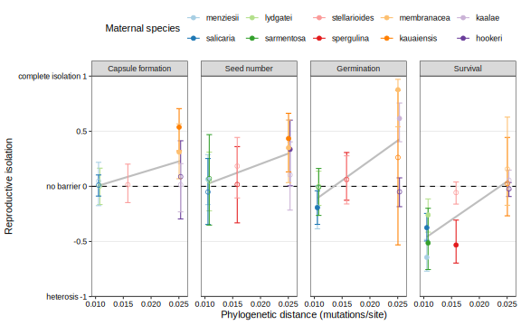
postzygotic.ratios.phylo %>% arrange(trait, pd) %>% select(trait, momsp, dadsp, RI, adj.p.value) %>%
kable(digits=3, caption = "compare inter vs. intraspecific crosses")| trait | momsp | dadsp | RI | adj.p.value |
|---|---|---|---|---|
| capsule.formed | menziesii | salicaria | 0.047 | 0.974 |
| capsule.formed | salicaria | menziesii | 0.011 | 1.000 |
| capsule.formed | lydgatei | sarmentosa | 0.004 | 1.000 |
| capsule.formed | stellarioides | spergulina | 0.015 | 1.000 |
| capsule.formed | kauaiensis | membranacea | 0.537 | 0.000 |
| capsule.formed | membranacea | kauaiensis | 0.311 | 0.000 |
| capsule.formed | hookeri | kaalae | 0.088 | 0.932 |
| capsule.formed | kaalae | hookeri | 0.014 | 1.000 |
| sds | menziesii | salicaria | 0.065 | 0.040 |
| sds | salicaria | menziesii | -0.051 | 0.224 |
| sds | lydgatei | sarmentosa | 0.047 | 0.247 |
| sds | sarmentosa | lydgatei | 0.071 | 0.101 |
| sds | spergulina | stellarioides | 0.017 | 0.635 |
| sds | stellarioides | spergulina | 0.184 | 0.058 |
| sds | kauaiensis | membranacea | 0.434 | 0.001 |
| sds | membranacea | kauaiensis | 0.350 | 0.000 |
| sds | hookeri | kaalae | 0.336 | 0.000 |
| sds | kaalae | hookeri | 0.104 | 0.224 |
| prop.germ | menziesii | salicaria | -0.187 | 0.011 |
| prop.germ | salicaria | menziesii | -0.193 | 0.002 |
| prop.germ | lydgatei | sarmentosa | 0.002 | 0.978 |
| prop.germ | sarmentosa | lydgatei | -0.008 | 0.978 |
| prop.germ | spergulina | stellarioides | 0.063 | 0.620 |
| prop.germ | stellarioides | spergulina | 0.059 | 0.620 |
| prop.germ | kauaiensis | membranacea | 0.262 | 0.620 |
| prop.germ | membranacea | kauaiensis | 0.877 | 0.000 |
| prop.germ | hookeri | kaalae | -0.050 | 0.407 |
| prop.germ | kaalae | hookeri | 0.616 | 0.000 |
| prop.alive | menziesii | salicaria | -0.644 | 0.000 |
| prop.alive | salicaria | menziesii | -0.375 | 0.000 |
| prop.alive | lydgatei | sarmentosa | -0.260 | 0.000 |
| prop.alive | sarmentosa | lydgatei | -0.514 | 0.000 |
| prop.alive | spergulina | stellarioides | -0.532 | 0.000 |
| prop.alive | stellarioides | spergulina | -0.056 | 0.122 |
| prop.alive | kauaiensis | membranacea | 0.025 | 0.822 |
| prop.alive | membranacea | kauaiensis | 0.158 | 0.333 |
| prop.alive | hookeri | kaalae | -0.023 | 0.283 |
| prop.alive | kaalae | hookeri | 0.056 | 0.094 |
postzygotic.ratios.phylo %>% group_by(trait) %>% nest() %>%
mutate(model = map(data, ~lm(RI ~ pd, data=.x)),
coef = map(model, tidy)) %>%
select(trait, coef) %>% unnest(coef) %>% filter(term != "(Intercept)") %>% kable()| trait | term | estimate | std.error | statistic | p.value |
|---|---|---|---|---|---|
| capsule.formed | pd | 15.23 | 8.916 | 1.708 | 0.1385 |
| sds | pd | 18.95 | 5.015 | 3.779 | 0.0054 |
| prop.germ | pd | 36.17 | 12.447 | 2.906 | 0.0197 |
| prop.alive | pd | 34.77 | 7.913 | 4.394 | 0.0023 |
Seed size
postzygotic.ratios.phylo %>% left_join(seedsize) %>% filter(trait %in% c("prop.germ", "prop.alive")) %>%
ggplot(aes(x=seedlength_mm, y=RI)) +
facet_wrap(vars(trait), labeller=as_labeller(propnames), nrow=1)+
geom_hline(yintercept=0, linetype=2) + geom_hline(yintercept=-1)+ geom_hline(yintercept=1)+
geom_errorbar(aes(color=momsp, ymin=low, ymax=high), width=0.001, linewidth=0.5) +
geom_path(aes(group=pair, color=momsp))+
geom_point(aes(color=momsp, shape = signif), size=2) +
scale_color_brewer(palette="Paired") + scale_shape_manual(values=c(1, 19),guide="none")+
labs(x="Seed length (mm)", color="Maternal species", y="Reproductive isolation") +
scale_y_continuous(limits=c(-1,1), breaks=c(-1,-0.5,0,0.5,1), expand=c(0,0),
labels=c("heterosis -1","-0.5","no barrier 0","0.5","complete isolation 1")) +
theme_bw() + theme(axis.text=element_text(color="black"), legend.position="top",
panel.grid.minor = element_blank(), panel.grid.major.x=element_blank(), panel.spacing = unit(1, "lines"))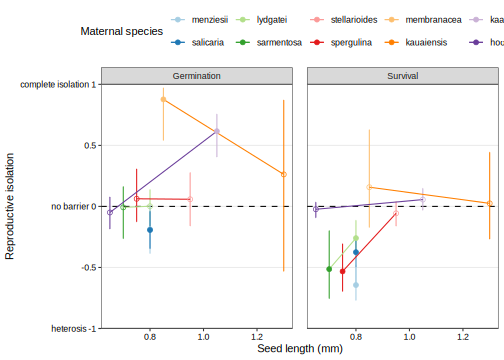
Competitive pollinations and phylogeny
mating.tree <- data.frame(momsp=tree_pairs$tip.label) %>% left_join(mating)
layout(matrix(c(1,2), nrow=1), widths=c(4,1))
par(mar=c(0,0,0,0))
plot.phylo(tree_pairs, tip.color = sp_pal[tree_pairs$tip.label], edge.width=5, edge.col ="grey", label.offset=0.0002, font=4, cex=1.2, x.lim=0.025)
add.scale.bar(x=0,y=10, lwd=5, lcol="grey", col="grey")
text(x=0.025, y=1:10, mating.tree$mating, cex=1.2, col=sp_pal[tree_pairs$tip.label]) #c("H"="\U26A5","D"="\U2640\U2642","G"="\U26A5\U2640")
ntaxa <- Ntip(tree_pairs)
sp_pairs %>% matrix(ncol=2, byrow=T) %>%
arcplot(show.labels=F, horizontal=F, ordering=tree_pairs$tip.label,
col.arcs=sp_pal[(1:5)*2], col.nodes = sp_pal, lwd.arcs=5,
ylim = range(arcdiagram::xynodes(ntaxa, 1:ntaxa, labels = 1:ntaxa)))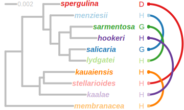
left_join(hybrid.phylodist, filter(hybrid.phylodist.test, term=="pd")) %>%
filter(trait=="prop.hybrid", type=="mixed") %>% left_join(hybrid.test) %>%
ggplot(aes(x=pd, y=estimate)) + coord_cartesian(xlim=c(0,NA))+
geom_hline(yintercept=0.5, linetype=2)+
geom_smooth(method="lm", se=F, color="grey") +
geom_pointrange(aes(ymax=conf.high, ymin=conf.low, color=momsp, shape=p.adj < 0.05)) +
scale_shape_manual("Different from 50%", values=c(1, 19), labels=c("no","yes"))+
scale_color_brewer(palette="Paired") +
scale_alpha_manual(breaks=c(T,F), values=c(0.5, 1))+
scale_y_continuous(breaks=(0:4)/4, labels=~scales::percent(.,accuracy=1), expand=c(0.02,0), limits=c(0,NA))+
labs(x="Phylogenetic distance (mutations/site)", color="Maternal species",
y="Hybrids from competitive pollinations") + theme_minimal() +
theme(axis.text=element_text(color="black"), legend.position="top", legend.box = "vertical",
panel.grid.minor = element_blank(), panel.grid.major.x=element_blank(), panel.spacing = unit(1, "lines"))hybrid.phylodist %>% filter(trait=="prop.hybrid", type=="mixed") %>%
left_join(select(hybrid.test, momsp, p.adj)) %>%
left_join(select(styles.emm, momsp, style_length_mm, style.se = std.error)) %>%
pivot_longer(c(pd, style_length_mm)) %>%
{
ggplot(., aes(x=value, y=estimate, color=momsp)) +
facet_wrap(vars(name), scales="free_x", strip.position = "bottom",
labeller=as_labeller(c(pd="Phylogenetic distance (mutations/site)", style_length_mm = "Style length (mm)")))+
geom_hline(yintercept=0.5, linetype=2)+
geom_smooth(data = filter(., name=="pd"), method="lm", se=F, color="grey") +
geom_line(data = filter(., name=="style_length_mm"), aes(group=pair))+
geom_errorbarh(data = filter(., name=="style_length_mm"), aes(xmin=value-style.se, xmax=value+style.se))+
geom_pointrange(aes(ymax=estimate+std.error, ymin=estimate-std.error, shape=p.adj < 0.05)) +
scale_shape_manual(values=c(1, 19), guide="none")+
scale_color_brewer(palette="Paired") +
scale_alpha_manual(breaks=c(T,F), values=c(0.5, 1))+
scale_y_continuous(breaks=(0:4)/4, labels=~scales::percent(.,accuracy=1), expand=c(0.02,0), limits=c(0,NA))+
labs(color="Maternal species", y="Hybrids from competitive pollinations") + theme_minimal() +
theme(axis.text=element_text(color="black"), legend.position="top",
axis.title.x=element_blank(), panel.grid.minor = element_blank(), panel.spacing = unit(1, "lines"),
strip.placement = "outside", strip.text = element_text(size=11))
}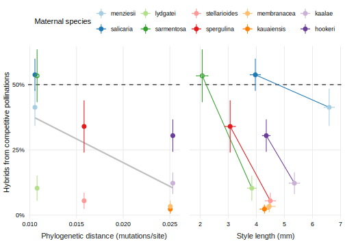
Regressions against the phylogenetic distance of each species pair. Solid regression lines are statistically significant in a model that also included the difference in style length within pairs. Note that for reference, data for intraspecific crosses is plotted with the phylogenetic distance to its paired species, which doesn’t make great sense.
hybrid.phylodist %>% filter(trait=="prop.hybrid", type=="mixed") %>%
left_join(select(styles.emm, momsp, style_length_mm, mating, se=std.error)) %>%
ggplot(aes(x=pd, y=style_length_mm, color=momsp, shape=mating)) +
geom_pointrange(aes(ymin=style_length_mm-se, ymax=style_length_mm+se)) +
scale_color_brewer(palette="Paired") + coord_cartesian(xlim=c(0, NA), ylim=c(0,NA)) +
labs(x="Phylogenetic distance (mutations/site)", y="Style length (mm)", color="Species", shape="Mating") +
theme(legend.position = "top")
The range of phylogenetic distances and style lengths in the study. The species in each pair with a longer style is given a lighter color.
Hybrid seed ratios
To estimate the proportion of viable seeds sired by heterospecific pollen, divide the surviving hybrid ratios in mixed crosses by the “hybrid vigor”: the germination and survival of hybrid seeds relative to conspecific seeds.
hybrid.phylostyle <- left_join(hybrid.test, phylodist) %>%
left_join(select(styles.emm, momsp, style_length_mm, style_diff_rel)) %>%
mutate(hybrid.RI.all = 1-2*hybrid.vigor.all/(hybrid.vigor.all+1)) %>% #RI per Sobel and Chen 2014
pivot_longer(all_of(c(names(propnames[c(1,4)]), "hybrid.RI.all")) )
hybrid.phylostyle %>% pivot_longer(c(pd, style_length_mm), names_to = "xname", values_to = "xvalue") %>%
ggplot(aes(x=xvalue, y=value)) +
facet_grid(name ~ xname, scales="free", switch="both",
labeller=as_labeller(c(hybrid.RI.all="Reproductive isolation\n(heterosis \U2194 complete isolation)",
prop.hybrid="Proportion of hybrid plants\n(observed)",
prop.hybrid.zyg = "Hybrids pollen competiveness\n(estimated)",
style_length_mm = "Style length (mm)",
pd="Phylogenetic distance (mutations/site)"))) +
geom_hline(aes(yintercept=if_else(name=="hybrid.RI.all",0,0.5)), linetype=2)+
geom_smooth(aes(linetype=if_else(xname=="pd","yes","no")), method="lm", se=F, color="grey") +
geom_path(aes(linetype=if_else(xname=="style_length_mm" & name != "hybrid.vigor.germsurv","yes","no"),
group=pair, color=sp_pairs[as.integer(pair)*2]), show.legend = F)+
geom_point(aes(color=momsp), size=4) +
scale_linetype_manual(values=c(yes="solid", no="blank"), guide="none") +
scale_y_continuous(expand=expansion(mult=c(0.05,0.05)), breaks=(-2:2)/2) +
expand_limits(y=c(0,0.6)) +
scale_color_brewer("Maternal\nspecies", palette="Paired") + theme_minimal()+
theme(axis.text=element_text(color="black"), legend.position="top", panel.background = element_rect(),
strip.placement = "outside", axis.title.x = element_blank(), axis.title.y = element_blank(),
panel.spacing.y = unit(0.5,"lines"), panel.spacing.x = unit(1,"lines"), panel.grid = element_blank()) 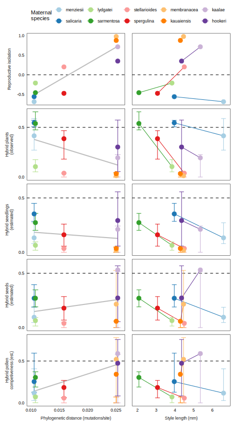
hybrid.phylostyle %>% group_by(name) %>% nest() %>%
mutate(model = map(data, ~lm(value ~ pd + style_diff_rel, data=.x)),
coef = map(model, tidy)) %>%
select(name, coef) %>% unnest(coef) %>% filter(term != "(Intercept)") %>% kable()| name | term | estimate | std.error | statistic | p.value |
|---|---|---|---|---|---|
| capsule.formed | pd | -20.4473 | 11.3916 | -1.7950 | 0.1157 |
| capsule.formed | style_diff_rel | 0.0598 | 0.2446 | 0.2444 | 0.8139 |
| prop.alive | pd | -149.7522 | 54.2623 | -2.7598 | 0.0281 |
| prop.alive | style_diff_rel | -0.5421 | 1.1650 | -0.4653 | 0.6558 |
| hybrid.RI.all | pd | 90.8415 | 14.6054 | 6.2197 | 0.0004 |
| hybrid.RI.all | style_diff_rel | 0.3407 | 0.3136 | 1.0867 | 0.3132 |
left_join(filter(comp.emm, trait=="prop.hybrid"), hybrid.test) %>%
left_join(select(styles.emm, momsp, style_length_mm, mating, style_conf.low=conf.low, style_conf.high=conf.high)) %>%
ggplot(aes(x=style_length_mm, y=estimate, color=momsp)) + geom_hline(aes(yintercept=0.5), linetype=2) +
geom_errorbarh(aes(xmin=style_conf.low, xmax=style_conf.high)) + geom_errorbar(aes(ymin=conf.low, ymax=conf.high)) +
geom_line(aes(group=pair))+ geom_point(size=4)+
scale_color_brewer(palette="Paired") + scale_y_continuous(labels=scales::percent_format(), breaks=(0:4)/4)+ scale_x_continuous(limits=c(0,NA))+
labs(x="Style length (mm)", color="Maternal\nspecies", y="Hybrids from competitive pollinations") +
theme_minimal() + theme(axis.text=element_text(color="black"), legend.position="top",
legend.key.size=unit(0.8, "lines"))+
guides(color = guide_legend(override.aes = list(size = 4)))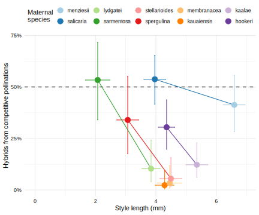